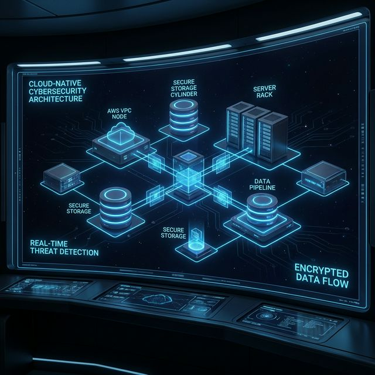

Built for Real Operations
Every component is purpose-built for threat detection, not just monitoring. From honeypot deception to cloud VM orchestration — Shadow Trust handles the full kill chain.
Global Threat Map
Real-time interactive world map showing live attack origins, GeoIP-enriched threat levels, and attacker session overlays across your honeypot network.
Multi-Protocol Honeypots
Deploy Cowrie (SSH/Telnet), Dionaea (malware capture), and Honeytrap (multi-port) nodes. Logs flow to edge SQLite for full offline resilience.
4-Stage Malware Pipeline
Static analysis → sandbox detonation → APK scanning via MobSF → secret extraction. Full automated pipeline from capture to intelligence.
AWS VM Orchestration
Launch isolated EC2 analysis VMs on demand. JIT credential injection via SSM. Guacamole remote desktop access. Auto-terminate after session.
MITRE ATT&CK Mapping
Every captured attack is automatically mapped to MITRE ATT&CK techniques and tactics — giving your analysts structured, actionable context.
6-Tier RBAC System
Super Admin, Overseer, Analyst, Specialist, Operative, and Auditor roles with clearance levels 1–3. JWT-authenticated with full audit logging.
Hybrid Edge-to-Cloud Design
Honeypot nodes write telemetry locally to SQLite — zero dependency on connectivity. When online, the backend syncs enriched analytics to Supabase PostgreSQL. AWS EC2 powers on-demand analysis sandboxes via async FastAPI endpoints. No public management ports. All admin access via AWS SSM.
View Architecture →
Real-Time Attack Monitoring
When an attacker touches a honeypot, lightweight agents capture every keystroke, command, file upload, and network probe in near real-time. Structured telemetry is enriched with GeoIP, risk scoring, and AI classification — then streamed directly to your dashboard.
View Live Dashboard →
Automated Sample Collection
The moment an attacker uploads a binary, script, or APK — automated collectors detect the file event, hash the sample, push it to secure S3 storage, and link it to the attacker session. The full 4-stage pipeline (static → sandbox → APK → secrets) runs without analyst intervention.
Explore Malware Lab →
Deep Behavioral Analysis
Spin up isolated analysis VMs with tools pre-loaded. MobSF integration delivers full Android APK security reports — permissions, network calls, hardcoded secrets — in minutes. URL scanner runs multi-engine reputation analysis with safe isolated rendering. All from the browser.
Open VM Lab →
Built for Every Mission
One platform — multiple deployment models. From a solo researcher to an enterprise SOC, Shadow Trust scales to your operation.
Research & Analysis
On-demand reverse-engineering VMs, MobSF APK scanning, and full malware pipeline automation for security research teams.
Enterprise SOC
Deploy honeypot networks, monitor threats in real-time, correlate attacker sessions, and send alerts via email and WhatsApp.
Academic & Training
Live attack visualization, MITRE ATT&CK mapping demos, and interactive threat intelligence dashboards for cybersecurity education.